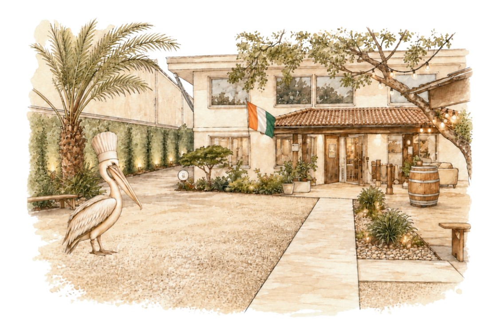

Les Classiques
Saumon Fumé à la Ficelle (Écosse)
Tranches de saumon fumé, blinis et toasts, crème fouettée citron-aneth
22.000
Terrine de Foie Gras Maison
Servie avec ses toasts et sa confiture d'oignons
24.000
Poissons & Crustacés
Le Mérou, Ma Façon
Mérou croustillant sur crème citronnée aux champignons
24.500
The Classics
String-Smoked Salmon (Scotland)
Slices of smoked salmon, blinis and toast, lemon-dill whipped cream
22.000
Homemade Foie Gras Terrine
Served with toast and onion jam
24.000
Fish & Shellfish
Grouper, My Way
Crispy Grouper on lemon cream with mushrooms (For Over 22 Years)
24.500